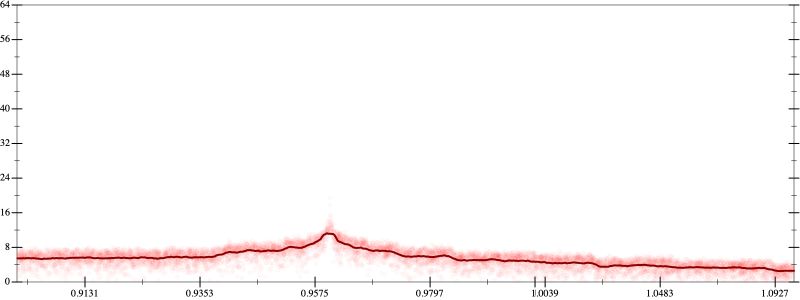
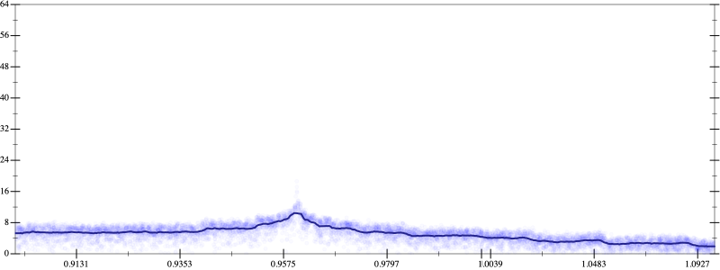
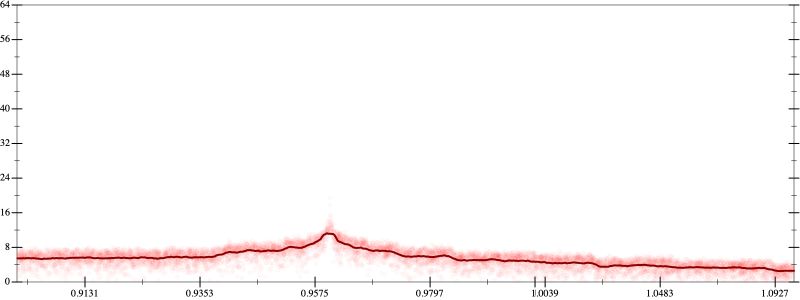
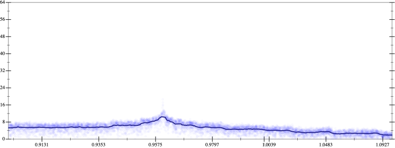

Initial program 5.4
\[\left(\left(\left(0.273438 + -9.84375 \cdot \left(x \cdot x\right)\right) + 54.140625 \cdot \left(\left(\left(x \cdot x\right) \cdot x\right) \cdot x\right)\right) + -93.84375 \cdot \left(\left(\left(\left(\left(x \cdot x\right) \cdot x\right) \cdot x\right) \cdot x\right) \cdot x\right)\right) + 50.273438 \cdot \left(\left(\left(\left(\left(\left(\left(x \cdot x\right) \cdot x\right) \cdot x\right) \cdot x\right) \cdot x\right) \cdot x\right) \cdot x\right)\]
Applied simplify5.1
\[\leadsto \color{blue}{\left(\left(\left(x \cdot 54.140625\right) \cdot {x}^{3} + x \cdot \left(x \cdot -9.84375\right)\right) + 0.273438\right) + \left({x}^{3} \cdot {x}^{3}\right) \cdot \left(-93.84375 + \left(50.273438 \cdot x\right) \cdot x\right)}\]
Taylor expanded around -inf 62.6
\[\leadsto \left(\color{blue}{\left(54.140625 \cdot \left(e^{3 \cdot \left(\log -1 - \log \left(\frac{-1}{x}\right)\right)} \cdot x\right) - 9.84375 \cdot {x}^{2}\right)} + 0.273438\right) + \left({x}^{3} \cdot {x}^{3}\right) \cdot \left(-93.84375 + \left(50.273438 \cdot x\right) \cdot x\right)\]
Applied simplify5.0
\[\leadsto \color{blue}{\left(\left(54.140625 \cdot x\right) \cdot {\left(e^{3}\right)}^{\left(0 + \log x\right)} + \left({x}^{3} \cdot {x}^{3}\right) \cdot \left(-93.84375 + \left(x \cdot 50.273438\right) \cdot x\right)\right) - \left(x \cdot \left(x \cdot 9.84375\right) - 0.273438\right)}\]
- Using strategy
rm Applied add-sqr-sqrt5.1
\[\leadsto \left(\left(54.140625 \cdot x\right) \cdot {\left(e^{3}\right)}^{\left(0 + \log x\right)} + \left({x}^{3} \cdot {x}^{3}\right) \cdot \left(-93.84375 + \left(x \cdot 50.273438\right) \cdot x\right)\right) - \color{blue}{\sqrt{x \cdot \left(x \cdot 9.84375\right) - 0.273438} \cdot \sqrt{x \cdot \left(x \cdot 9.84375\right) - 0.273438}}\]
Applied add-sqr-sqrt5.1
\[\leadsto \color{blue}{\sqrt{\left(54.140625 \cdot x\right) \cdot {\left(e^{3}\right)}^{\left(0 + \log x\right)} + \left({x}^{3} \cdot {x}^{3}\right) \cdot \left(-93.84375 + \left(x \cdot 50.273438\right) \cdot x\right)} \cdot \sqrt{\left(54.140625 \cdot x\right) \cdot {\left(e^{3}\right)}^{\left(0 + \log x\right)} + \left({x}^{3} \cdot {x}^{3}\right) \cdot \left(-93.84375 + \left(x \cdot 50.273438\right) \cdot x\right)}} - \sqrt{x \cdot \left(x \cdot 9.84375\right) - 0.273438} \cdot \sqrt{x \cdot \left(x \cdot 9.84375\right) - 0.273438}\]
Applied difference-of-squares5.1
\[\leadsto \color{blue}{\left(\sqrt{\left(54.140625 \cdot x\right) \cdot {\left(e^{3}\right)}^{\left(0 + \log x\right)} + \left({x}^{3} \cdot {x}^{3}\right) \cdot \left(-93.84375 + \left(x \cdot 50.273438\right) \cdot x\right)} + \sqrt{x \cdot \left(x \cdot 9.84375\right) - 0.273438}\right) \cdot \left(\sqrt{\left(54.140625 \cdot x\right) \cdot {\left(e^{3}\right)}^{\left(0 + \log x\right)} + \left({x}^{3} \cdot {x}^{3}\right) \cdot \left(-93.84375 + \left(x \cdot 50.273438\right) \cdot x\right)} - \sqrt{x \cdot \left(x \cdot 9.84375\right) - 0.273438}\right)}\]
Applied simplify5.0
\[\leadsto \color{blue}{\left(\sqrt{\left({x}^{3} \cdot {x}^{3}\right) \cdot \left(-93.84375 + \left(x \cdot x\right) \cdot 50.273438\right) + x \cdot \left(54.140625 \cdot {\left(e^{3}\right)}^{\left(\log x\right)}\right)} + \sqrt{9.84375 \cdot \left(x \cdot x\right) - 0.273438}\right)} \cdot \left(\sqrt{\left(54.140625 \cdot x\right) \cdot {\left(e^{3}\right)}^{\left(0 + \log x\right)} + \left({x}^{3} \cdot {x}^{3}\right) \cdot \left(-93.84375 + \left(x \cdot 50.273438\right) \cdot x\right)} - \sqrt{x \cdot \left(x \cdot 9.84375\right) - 0.273438}\right)\]
Applied simplify5.1
\[\leadsto \left(\sqrt{\left({x}^{3} \cdot {x}^{3}\right) \cdot \left(-93.84375 + \left(x \cdot x\right) \cdot 50.273438\right) + x \cdot \left(54.140625 \cdot {\left(e^{3}\right)}^{\left(\log x\right)}\right)} + \sqrt{9.84375 \cdot \left(x \cdot x\right) - 0.273438}\right) \cdot \color{blue}{\left(\sqrt{\left({x}^{3} \cdot {x}^{3}\right) \cdot \left(-93.84375 + \left(x \cdot x\right) \cdot 50.273438\right) + \left(54.140625 \cdot {\left(e^{3}\right)}^{\left(\log x\right)}\right) \cdot x} - \sqrt{9.84375 \cdot \left(x \cdot x\right) - 0.273438}\right)}\]
- Using strategy
rm Applied add-log-exp5.1
\[\leadsto \left(\sqrt{\color{blue}{\log \left(e^{\left({x}^{3} \cdot {x}^{3}\right) \cdot \left(-93.84375 + \left(x \cdot x\right) \cdot 50.273438\right) + x \cdot \left(54.140625 \cdot {\left(e^{3}\right)}^{\left(\log x\right)}\right)}\right)}} + \sqrt{9.84375 \cdot \left(x \cdot x\right) - 0.273438}\right) \cdot \left(\sqrt{\left({x}^{3} \cdot {x}^{3}\right) \cdot \left(-93.84375 + \left(x \cdot x\right) \cdot 50.273438\right) + \left(54.140625 \cdot {\left(e^{3}\right)}^{\left(\log x\right)}\right) \cdot x} - \sqrt{9.84375 \cdot \left(x \cdot x\right) - 0.273438}\right)\]
Applied simplify5.0
\[\leadsto \left(\sqrt{\log \color{blue}{\left({\left(e^{{\left(x \cdot x\right)}^{3}}\right)}^{\left(x \cdot \left(x \cdot 50.273438\right) + -93.84375\right)} \cdot {\left(e^{x \cdot 54.140625}\right)}^{\left({\left(e^{3}\right)}^{\left(\log x\right)}\right)}\right)}} + \sqrt{9.84375 \cdot \left(x \cdot x\right) - 0.273438}\right) \cdot \left(\sqrt{\left({x}^{3} \cdot {x}^{3}\right) \cdot \left(-93.84375 + \left(x \cdot x\right) \cdot 50.273438\right) + \left(54.140625 \cdot {\left(e^{3}\right)}^{\left(\log x\right)}\right) \cdot x} - \sqrt{9.84375 \cdot \left(x \cdot x\right) - 0.273438}\right)\]
- Using strategy
rm Applied add-cube-cbrt5.0
\[\leadsto \left(\sqrt{\log \left({\left(e^{\color{blue}{\left(\sqrt[3]{{\left(x \cdot x\right)}^{3}} \cdot \sqrt[3]{{\left(x \cdot x\right)}^{3}}\right) \cdot \sqrt[3]{{\left(x \cdot x\right)}^{3}}}}\right)}^{\left(x \cdot \left(x \cdot 50.273438\right) + -93.84375\right)} \cdot {\left(e^{x \cdot 54.140625}\right)}^{\left({\left(e^{3}\right)}^{\left(\log x\right)}\right)}\right)} + \sqrt{9.84375 \cdot \left(x \cdot x\right) - 0.273438}\right) \cdot \left(\sqrt{\left({x}^{3} \cdot {x}^{3}\right) \cdot \left(-93.84375 + \left(x \cdot x\right) \cdot 50.273438\right) + \left(54.140625 \cdot {\left(e^{3}\right)}^{\left(\log x\right)}\right) \cdot x} - \sqrt{9.84375 \cdot \left(x \cdot x\right) - 0.273438}\right)\]
Applied exp-prod5.0
\[\leadsto \left(\sqrt{\log \left({\color{blue}{\left({\left(e^{\sqrt[3]{{\left(x \cdot x\right)}^{3}} \cdot \sqrt[3]{{\left(x \cdot x\right)}^{3}}}\right)}^{\left(\sqrt[3]{{\left(x \cdot x\right)}^{3}}\right)}\right)}}^{\left(x \cdot \left(x \cdot 50.273438\right) + -93.84375\right)} \cdot {\left(e^{x \cdot 54.140625}\right)}^{\left({\left(e^{3}\right)}^{\left(\log x\right)}\right)}\right)} + \sqrt{9.84375 \cdot \left(x \cdot x\right) - 0.273438}\right) \cdot \left(\sqrt{\left({x}^{3} \cdot {x}^{3}\right) \cdot \left(-93.84375 + \left(x \cdot x\right) \cdot 50.273438\right) + \left(54.140625 \cdot {\left(e^{3}\right)}^{\left(\log x\right)}\right) \cdot x} - \sqrt{9.84375 \cdot \left(x \cdot x\right) - 0.273438}\right)\]
Applied pow-pow5.0
\[\leadsto \left(\sqrt{\log \left(\color{blue}{{\left(e^{\sqrt[3]{{\left(x \cdot x\right)}^{3}} \cdot \sqrt[3]{{\left(x \cdot x\right)}^{3}}}\right)}^{\left(\sqrt[3]{{\left(x \cdot x\right)}^{3}} \cdot \left(x \cdot \left(x \cdot 50.273438\right) + -93.84375\right)\right)}} \cdot {\left(e^{x \cdot 54.140625}\right)}^{\left({\left(e^{3}\right)}^{\left(\log x\right)}\right)}\right)} + \sqrt{9.84375 \cdot \left(x \cdot x\right) - 0.273438}\right) \cdot \left(\sqrt{\left({x}^{3} \cdot {x}^{3}\right) \cdot \left(-93.84375 + \left(x \cdot x\right) \cdot 50.273438\right) + \left(54.140625 \cdot {\left(e^{3}\right)}^{\left(\log x\right)}\right) \cdot x} - \sqrt{9.84375 \cdot \left(x \cdot x\right) - 0.273438}\right)\]
Applied simplify5.0
\[\leadsto \left(\sqrt{\log \left({\left(e^{\sqrt[3]{{\left(x \cdot x\right)}^{3}} \cdot \sqrt[3]{{\left(x \cdot x\right)}^{3}}}\right)}^{\color{blue}{\left({x}^{3} \cdot \left(50.273438 \cdot x\right) + -93.84375 \cdot \left(x \cdot x\right)\right)}} \cdot {\left(e^{x \cdot 54.140625}\right)}^{\left({\left(e^{3}\right)}^{\left(\log x\right)}\right)}\right)} + \sqrt{9.84375 \cdot \left(x \cdot x\right) - 0.273438}\right) \cdot \left(\sqrt{\left({x}^{3} \cdot {x}^{3}\right) \cdot \left(-93.84375 + \left(x \cdot x\right) \cdot 50.273438\right) + \left(54.140625 \cdot {\left(e^{3}\right)}^{\left(\log x\right)}\right) \cdot x} - \sqrt{9.84375 \cdot \left(x \cdot x\right) - 0.273438}\right)\]
 
